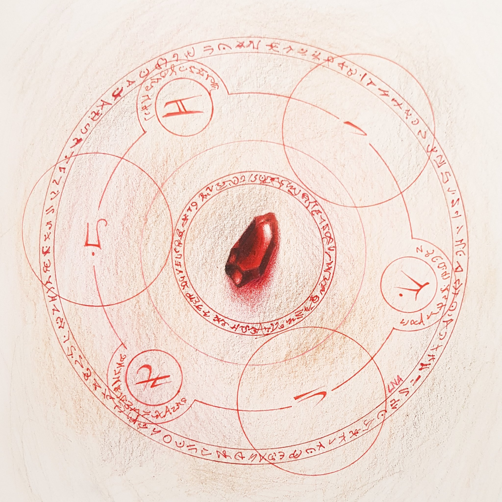

Piedra filosofal
Es un objeto alquímico de poder absoluto, capaz de eliminar las limitaciones normales de la alquimia, especialmente la Ley del Intercambio Equivalente. Con ella, un alquimista puede realizar transmutaciones imposibles, crear o destruir materia sin costo aparente, regenerar cuerpos, o manipular almas.
Creación
La Piedra Filosofal en Fullmetal Alchemist: Brotherhood se crea mediante la sacrificación masiva de vidas humanas, cuyas almas son capturadas usando un círculo de transmutación especializado y luego selladas dentro de un recipiente alquímico, formando así una sustancia roja con un poder inmenso. Esta piedra permite ignorar la Ley del Intercambio Equivalente, potenciando la alquimia y otorgando habilidades como regeneración o transmutaciones imposibles, pero cada uso consume lentamente las almas contenidas. Su creación es considerada el mayor pecado alquímico, ya que transforma a los seres humanos en simples recursos energéticos.
Historia
La Piedra Filosofal en Fullmetal Alchemist: Brotherhood tiene una historia trágica y central en la trama. Su origen se remonta a la antigua nación de Xerxes, donde un homúnculo sin nombre engañó al rey para realizar una transmutación masiva que sacrificó a toda la población y creó la primera piedra, otorgándole poder e inmortalidad a él y a Van Hohenheim, quien luego se arrepentiría profundamente. Siglos después, este homúnculo se convierte en Padre y funda el Estado de Amestris como un sistema diseñado para crear otra piedra aún más poderosa, provocando guerras como la de Ishval para recolectar miles de almas. Estas piedras son usadas por los homúnculos y soldados como Kimblee, mientras que algunos, como Dr. Marcoh y Scar, intentan revertir sus efectos. A lo largo de la historia, los hermanos Edward y Alphonse Elric descubren su oscuro secreto y rechazan su uso, negándose a sacrificar vidas inocentes para recuperar sus cuerpos. Finalmente, Padre logra absorber millones de almas y abre la Puerta de la Verdad, pero es derrotado cuando su piedra se agota, mostrando que el poder absoluto, sin ética, conduce a la ruina. Así, la piedra simboliza el costo inmoral del poder y la importancia de respetar la vida humana.